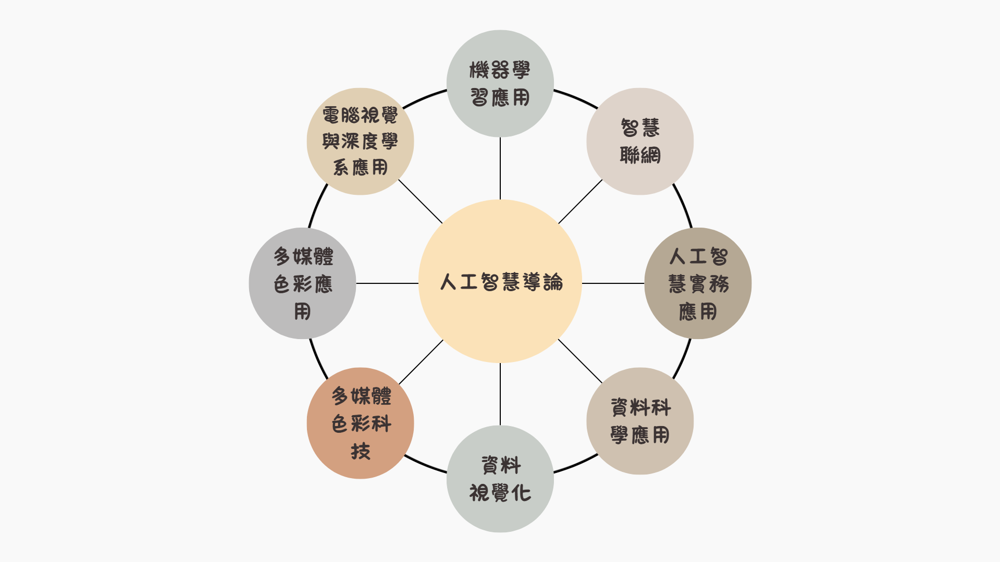

課程介紹
人工智慧時代的來臨，讓企業無不朝向自主性、自動化的方向發展。人工智慧相關軟硬體的操控，奠定了自主性產品及智慧系統的設計與開發能力。
世新大學資管系的人工智慧相關課程， 以程式設計及數據分析能力為基礎，輔以人工智慧相關軟硬體專業課程。藉由學理基礎課程的理解及實務應用課程的實作，培養學生跨足人工智慧的領域，包括機器視覺、自然語言處理、智慧機器人及生成創作等產品及系統的開發設計能力。進一步配合畢業專題的製作，融合理論與實務，開發設計自主性、自動化產品及系統。
畢業生分布於製造業、資訊業、服務業等各行各業，從事的工作主要集中在自主性產品及智慧系統的開發設計、專案管理與系統維護等領域，並且擁有相當不錯的薪資回報及工作成就感。加入世新資管，開啟人工智慧實務應用的無限可能。
課程架構

領航員
- 林金玲 老師:
- 羅梅君 老師:
- 劉嘉傑 老師:
- 施朝正 老師:
機器學習、智慧型機器人、資訊檢索與探勘、區位規劃
指紋影像處理分析、機器學習、深度學習、自然語言處理、知識表示與推論
機器學習、演算法、機器學習、圖論、字串學
大數據資料探勘、人工智慧、物聯網、資料結構及演算法、平行演算法